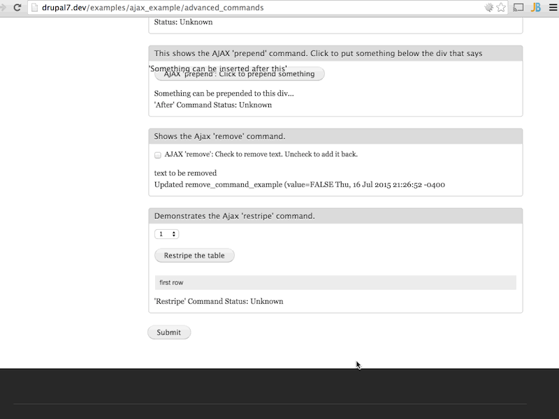
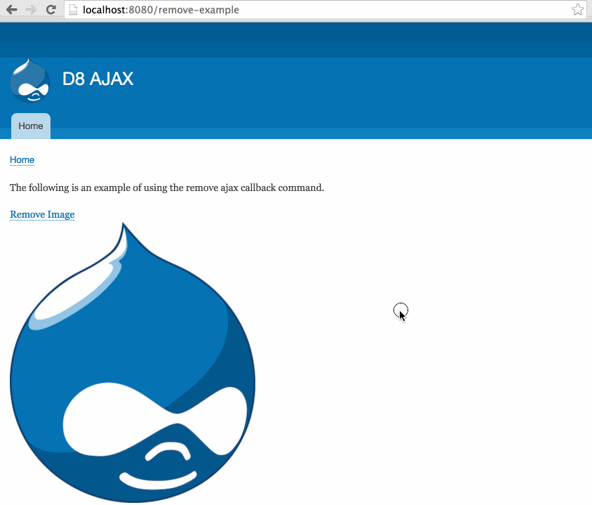

#midcamp
@WeAreGenuine
D8 AJAX /
Michael Miles
Demystifying AJAX Callback Commands
(in Drupal 8)
MidCamp 2016
Follow Along: bit.ly/Mid16Ajax
Background image modified version of "Chicago Bean" by Sergey Gabdurakhmanov
Mike Miles
@mikemiles86
Genuine (wearegenuine.com)
Goals of this Session
- Explain AJAX callback commands
- Demonstrate AJAX callback commands
- Outline custom AJAX callback commands
Prerequsite: How Ajax Requests Work
What are Callback Commands
If an Ajax request was a Big Mac, then Callback Commands would be the secret sauce.
Background image "The Biggest Big Mac in the World" by R4vi
Callback Commands: Server Side
- Follows naming convention [CommandName]Command(.php)
- Class that implements CommandInterface
- Defines a 'render' method
- Returns an associative array
- Contains element with key of 'command'
- 'Command' value is name of JavaScript method
Anatomy of a Callback Command: PHP
use Drupal\Core\Ajax\CommandInterface;
// An AJAX command for calling [commandName]() JavaScript method.
class [CommandName]Command implements CommandInterface {
// Implements Drupal\Core\Ajax\CommandInterface:render().
public function render() {
return array(
'command' => '[commandName]', // Name of JavaScript Method.
// other request arguments...
);
}
}
[CommandName]Command.php Callback command classes need to implement CommandInterface (lines #1 & #4). Must define a 'render' method (lines #7 - #12), that returns an associative array. Associative array must contain an element with the key of 'command' and a vlaue that is a name of the javascript method. Additional arguments are passed as response data.
Callback Commands: Client Side
- Wrapper for additional javascript
- Method attached to 'Drupal.AjaxCommands.prototype' object
- Takes 3 arguments
- ajax
- response
- status
Anatomy of a Callback Command: JavaScript
/**
* [commandName description]
*
* @param {Drupal.Ajax} [ajax]
* @param {object} response
* @param {number} [status]
*/
Drupal.AjaxCommands.prototype.[commandName] = function(ajax, response, status){
// Custom javascript goes here ...
}
Callback Command needs to be attached as a method to the Drupal.AjaxCommands.prototype object (line #8). Command accepts three arguments and is a wrapper for additional javascript.
Callback Commands Are...
- Functions returned and invoked by all Ajax requests
- PHP Classes that implement CommandInterface
- Methods attached to 'Drupal.AjaxCommands.prototype'
How to Use Callback Commands
Example: The "Remove" Command
Example of using the remove callback command. Link triggers ajax request which returns response with 'remove' command targeting image id.
Attach Drupal Ajax library to the requesting page
namespace Drupal\remove_example\Controller;
use Drupal\Core\Controller\ControllerBase;
class RemoveExampleController extends ControllerBase {
// Return output for displaying an image and ajax link for removing it.
public static function demo() {
$output['description']['#markup'] = '' . t('The following is an example of using the remove ajax callback command.') . '
';
// ...
// Attach the ajax library.
$output['#attached']['library'][] = 'core/drupal.ajax';
// Return render array
return $output;
}
// ...
}
remove_example/src/Controller/RemoveExampleController.php Pages that want to use Ajax need to include the ajax library. On line #11 attaching the core Drupal Ajax library to the render array for the page.
Attach commands to an AjaxResponse object using 'addCommand'
namespace Drupal\remove_example\Controller;
use Drupal\Core\Controller\ControllerBase;
use Drupal\Core\Ajax\AjaxResponse;
use Drupal\Core\Ajax\RemoveCommand;
class RemoveExampleController extends ControllerBase {
// ...
/**
* Callback method for removing image from 'remove-example' page.
*
* @return \Drupal\Core\Ajax\AjaxResponse|mixed
*/
public static function removeImage() {
// Create an Ajax Response object.
$response = new AjaxResponse();
// Add a remove command.
$response->addCommand(new RemoveCommand('#example_remove_wrapper'));
// Return the response object.
return $response;
}
}
remove_example/src/Controller/RemoveExampleController.php Classes used for Ajax requests need to include needed classes (line #3, Line #4). Callback method needs to return an ajax command (line #14) and attach commands using 'addCommand' method (line #16).
To Use Callback Commands...
- Attach Drupal Ajax library to the requesting page
- Create callback method that returns AjaxResponse
- Attach commands to AjaxResponse object with 'addCommand'
Creating Custom Callback Commands
Custom Callback Commands: PHP
- Follow naming convention [CommandName]Command(.php)
- Implement CommandInterface
- Define a 'render' method
- Return an associative array with 'command' element
- Place in 'src/Ajax/' directory of module
Define a class that implements CommandInterfaced
namespace Drupal\remove_example\Ajax;
use Drupal\Core\Ajax\CommandInterface;
// An AJAX command for calling the jQuery slideUp() and remove() methods.
class SlideRemoveCommand implements CommandInterface {
// Constructs an SlideRemoveCommand object.
public function __construct($selector, $duration = NULL) {
$this->selector = $selector;
$this->duration = $duration;
}
// Implements Drupal\Core\Ajax\CommandInterface:render().
public function render() {
return array(
'command' => 'slideRemove',
'selector' => $this->selector,
'duration' => $this->duration,
);
}
}
remove_example/src/Ajax/SlideRemoveCommand.php An example of creating a custom 'SlideRemove' callback command PHP Class. Class follows naming conventions and implements CommandInterface (line #5). Defines a render method (line #12), which returns an associative array with a 'command' keyed element. (lines #13 - #17).
Custom Callback Commands: JavaScript
- Attach method to 'Drupal.AjaxCommands.prototype' object
- Take 3 arguments
- ajax
- response
- status
- Add JavaScript to a custom library
Attach a method to 'Drupal.AjaxCommands.prototype' object
(function ($, window, Drupal, drupalSettings) {
'use strict';
// Command to slide up content before removing it from the page.
Drupal.AjaxCommands.prototype.slideRemove = function(ajax, response, status){
var duration = response.duration ? response.duration : "slow";
$(response.selector).each(function() {
$(this).slideUp(duration, function() {
$(this).remove();
});
});
}
})(jQuery, this, Drupal, drupalSettings);
remove_example/js/ajax.js An example of creating a custom 'slideRemove' callback command javascript method. Attached to 'Drupal.AjaxCommands.prototype' object and accepts three arguments (line #4). Uses response data for additional javascript functionality (lines #5 - #13).
Add JavaScript to a custom library
remove-example:
version: VERSION
js:
js/ajax.js: {}
dependencies:
- core/drupal.ajax
remove_example.libraries.yml Javascript file that contains custom 'slideRemove' command is added to a library deffinition (lines #3 - #4). Add core Drupal Ajax library as a dependency so that it is included (lines #5 - #6).
To Create Custom Callback Commands...
- Use a custom module
- Define classes that implements CommandInterface
- Attach JavaScript method(s) to 'Drupal.AjaxCommands.prototype'
Using Custom Callback Commands
Example: The "slideRemove" Command
Example of using the custom slideRemove callback command. Link triggers ajax request which returns response with 'slideRemove' command targeting image id.
Attach custom library to the requesting page
namespace Drupal\remove_example\Controller;
use Drupal\Core\Controller\ControllerBase;
class RemoveExampleController extends ControllerBase {
// Return output for displaying an image and ajax link for removing it.
public static function demo() {
$output['description']['#markup'] = '' . t('The following is an example of using the remove ajax callback command.') . '
';
// ...
// Attach custom Ajax command library.
$output['#attached']['library'][] = 'remove_example/remove-example';
// Return render array
return $output;
}
// ...
}
remove_example/src/Controller/RemoveExampleController.php Custom Javascript library needs to be included on requesting page, so that methods are attached. Attaching library to render array on line #11.
Attach commands to AjaxResponse object with 'addCommand'
namespace Drupal\remove_example\Controller;
use Drupal\Core\Controller\ControllerBase;
use Drupal\Core\Ajax\AjaxResponse;
use Drupal\Core\remove_example\SlideRemoveCommand;
class RemoveExampleController extends ControllerBase {
// ...
/**
* Callback method for removing image from 'remove-example' page.
*
* @return \Drupal\Core\Ajax\AjaxResponse|mixed
*/
public static function removeImage() {
// Create an Ajax Response object.
$response = new AjaxResponse();
// Add a remove command.
$response->addCommand(new SlideRemoveCommand('#example_remove_wrapper'));
// Return the response object.
return $response;
}
}
remove_example/src/Controller/RemoveExampleController.php Like core callback commands, custom command classes have to be included in callback controller (line #4) and added to AjaxResponse in callback method (line #17).
To Use Custom Callback Commands...
- Attach custom library to the requesting page
- Attach commands to AjaxResponse object with 'addCommand'
Review
AJAX Callback Commands Are...
- Functions returned and invoked by all Ajax responses
- PHP Classes implementing CommandInterface
- Methods attached to 'Drupal.AjaxCommands.prototype' object
To Use AJAX Callback Commands...
- Attach Drupal Ajax library to the requesting page
- Create callback method that returns AjaxResponse
- Attach commands to AjaxResponse object with 'addCommand'
To Create AJAX Callback Commands...
- Use a custom module
- Define classes that implements CommandInterface
- Attach JavaScript methods to 'Drupal.AjaxCommands.prototype'
To Use Custom AJAX Callback Commands...
- Attach custom library to the requesting page
- Same process as using core commands
Resources
Drupal 8 AJAX Api: bit.ly/Drupal8Ajax
This Presentation: bit.ly/Mid16Ajax
Presentation Slides: bit.ly/Mid16AjaxSlides
Example Code: bit.ly/Mid16AjaxEx
Creating Commands in D8: bit.ly/D8AjaxCmds
Thank You!
- Feedback: legacy.joind.in/17274
- Room survey: goo.gl/WXQ5H6
- Questions: @mikemiles86